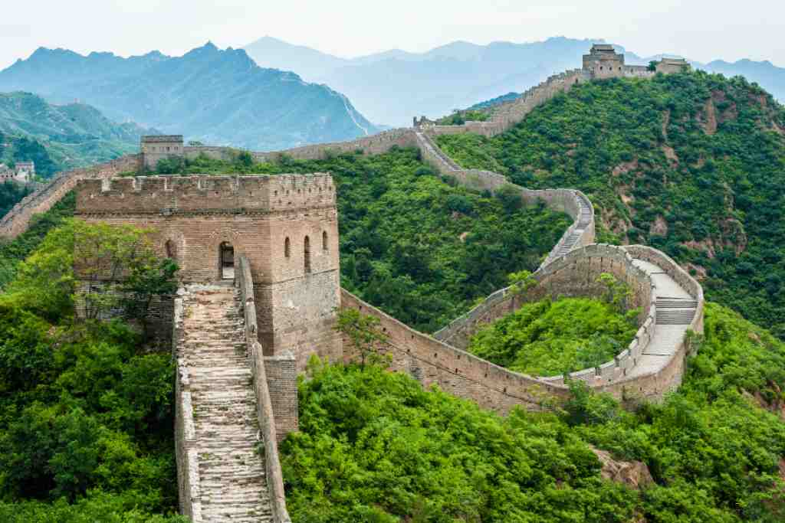
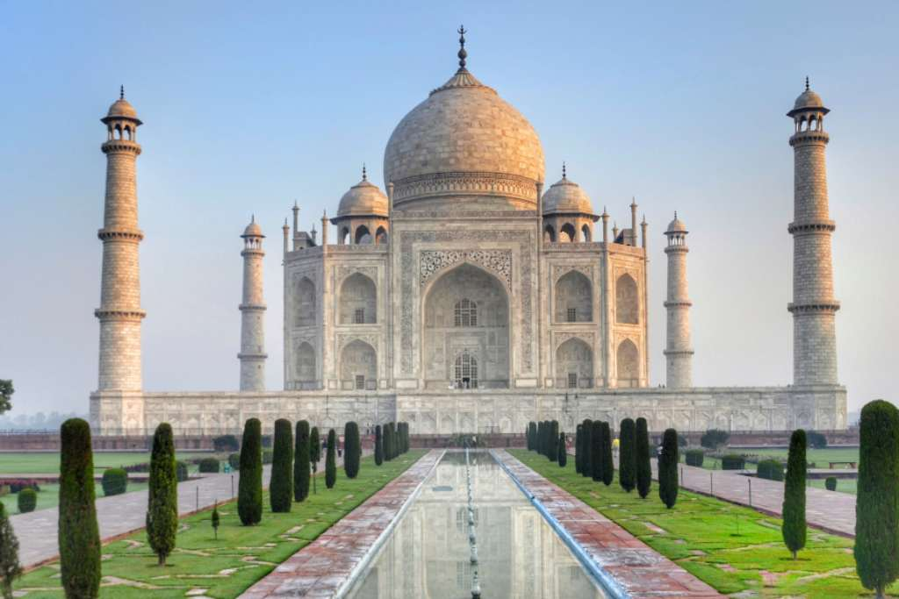
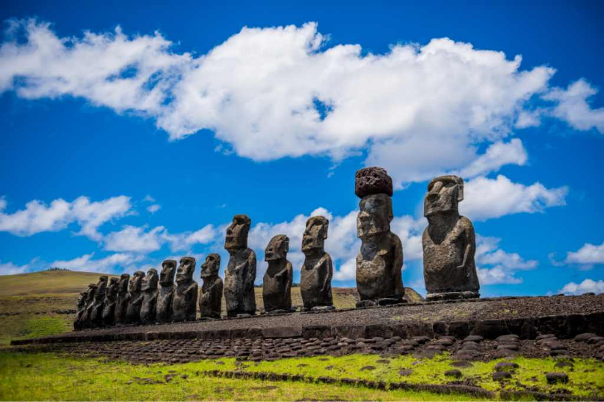
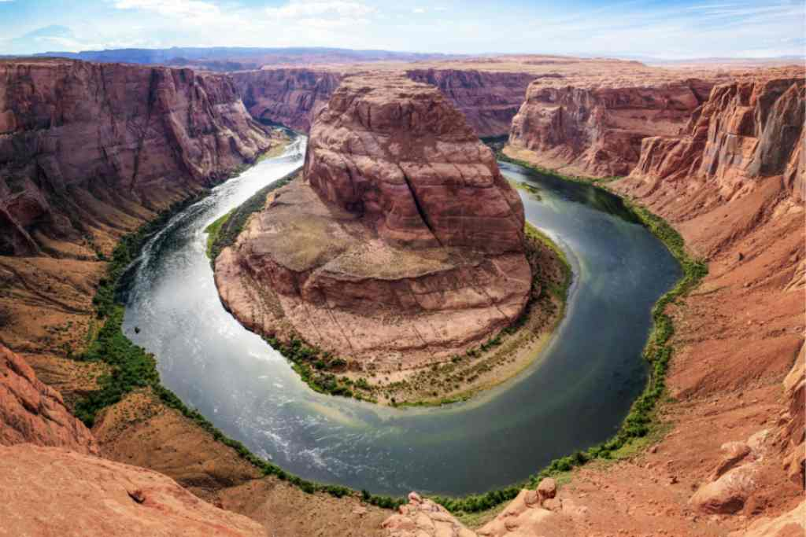

MACHU PICCHU
Machu Picchu es una antigua ciudad inca situada en Perú, construida en el siglo XV bajo el reinado del emperador Pachacútec. Su ubicación en las montañas de los Andes la convierte en un impresionante ejemplo de arquitectura y urbanismo inca. La ciudad fue redescubierta en 1911 por el arqueólogo Hiram Bingham, aunque ya era conocida por algunos locales. Machu Picchu es famosa por sus estructuras bien conservadas, como el Templo del Sol y la Intihuatana, una piedra ceremonial. Se cree que fue un centro religioso y administrativo, y su construcción demuestra el avanzado conocimiento de los incas en ingeniería y agricultura. En 1983, fue declarada Patrimonio de la Humanidad por la UNESCO y es uno de los destinos turísticos más visitados del mundo.

LA GRAN MURALLA
Es un protocolo de intercambio de archivos que lleva 50 años con nosotros, y que es más antiguo que la propia Internet. A día de hoy todavía se utiliza en algunos contextos, aunque de cara a intercambiar archivos entre usuarios suelen utilizarse más otras alternativas como el P2P o el alojamiento en la nube. En cualquier caso, no deja de ser una tecnología con la que puede que te encuentres todavía alguna vez, y que es pura historia de Internet.
TAJ MAHAL
El Taj Mahal es un mausoleo situado en Agra, India, construido entre 1632 y 1653 por el emperador mogol Shah Jahan en memoria de su esposa Mumtaz Mahal, quien falleció durante el parto de su décimo cuarto hijo. Este impresionante edificio de mármol blanco es considerado una de las obras maestras de la arquitectura islámica y un símbolo del amor eterno. El Taj Mahal combina elementos de estilos arquitectónicos indios, persas y otomanos. Su complejo incluye jardines, fuentes y otros edificios, destacando la cúpula central y los minaretes. En 1983, fue declarado Patrimonio de la Humanidad por la UNESCO y es uno de los destinos turísticos más emblemáticos del mundo.
PETRA
Petra es una antigua ciudad nabatea ubicada en Jordania, famosa por su arquitectura tallada en roca y su sistema de canalización de agua. Fundada en el siglo VI a.C., Petra se convirtió en un importante centro de comercio debido a su ubicación estratégica en rutas caravaneras. El sitio más emblemático es Al-Khazneh, o el Tesoro, conocido por su impresionante fachada. Petra fue redescubierta en 1812 por el explorador suizo Johann Ludwig Burckhardt. En 1985, fue declarada Patrimonio de la Humanidad por la UNESCO y es considerada una de las Nuevas Siete Maravillas del Mundo, atrayendo a turistas de todo el mundo.

MOAI
Los moai son enormes estatuas de piedra ubicadas en la Isla de Pascua, Chile, que fueron esculpidas entre los siglos XIII y XVII por el pueblo rapanui. Estas estatuas, que representan antepasados importantes, pueden alcanzar hasta 10 metros de altura y pesar varias toneladas. La mayoría de los moai están hechos de toba volcánica y se encuentran en plataformas ceremoniales llamadas "ahu". Su construcción y transporte son un testimonio del ingenio y la habilidad de la cultura rapanui. En 1995, la Isla de Pascua fue declarada Patrimonio de la Humanidad por la UNESCO, destacando la importancia cultural y arqueológica de los moai.
EL GRAN CAÑON
El Gran Cañón es un impresionante cañón ubicado en el norte de Arizona, EE. UU., formado por la erosión del río Colorado a lo largo de millones de años. Con aproximadamente 446 kilómetros de longitud, hasta 29 kilómetros de ancho y más de 1,800 metros de profundidad, es conocido por sus espectaculares paisajes y su diversidad geológica. El cañón es un sitio sagrado para muchas tribus nativas americanas y ha sido declarado Parque Nacional desde 1919, atrayendo a millones de visitantes cada año. Es un destino popular para actividades al aire libre, como senderismo, rafting y fotografía, y es considerado una de las maravillas naturales del mundo.
COLISEO ROMANO
El Coliseo, ubicado en Roma, Italia, es un antiguo anfiteatro construido entre el 70 y el 80 d.C. durante el reinado del emperador Vespasiano y terminado por su hijo Tito. Con una capacidad para alrededor de 50,000 espectadores, era el lugar donde se celebraban combates de gladiadores, espectáculos públicos y otras ceremonias. El Coliseo es un símbolo emblemático de la arquitectura romana, destacando por su diseño ingenioso y su uso de arcos y bóvedas. A lo largo de los siglos, ha sufrido daños por terremotos y saqueos, pero sigue siendo una de las atracciones turísticas más visitadas del mundo y fue declarado Patrimonio de la Humanidad por la UNESCO en 1980.

Las Siete Maravillas del Mundo no solo son monumentos extraordinarios que destacan por su grandeza arquitectónica, sino que también son reflejos profundos de las culturas, valores e ingenios de las civilizaciones que las crearon. Cada maravilla tiene su propia historia que nos conecta con el pasado, proporcionando un sentido de identidad y orgullo a las naciones que las albergan. La Gran Muralla China, por ejemplo, simboliza la resistencia y la determinación del pueblo chino a lo largo de los siglos, actuando como un recordatorio de la importancia de la defensa y la unidad. A través de su extensión y diversidad, la muralla también representa la rica historia de la civilización china y su interacción con el entorno natural. Petra, con su asombrosa arquitectura tallada en roca, nos habla de la sofisticación de los nabateos y su capacidad para adaptarse y prosperar en un entorno desértico. Su red de caminos y sistemas de agua demuestra un entendimiento avanzado de la ingeniería y la planificación urbana. El Cristo Redentor no solo es una obra maestra de la escultura, sino también un símbolo de paz y esperanza, que da la bienvenida a millones de turistas en Brasil. Representa la fusión de la fe, la cultura y el paisaje, convirtiéndose en un ícono del espíritu carioca. Machu Picchu, como un testimonio de la civilización inca, nos ofrece una visión de la relación íntima que los incas tenían con la naturaleza. Este sitio sagrado, perdido en la montaña, continúa fascinando a investigadores y visitantes, invitándolos a reflexionar sobre su rica historia y su misteriosa función. Chichén Itzá, con su magnífica pirámide de Kukulkán, no solo es un ejemplo del ingenio arquitectónico maya, sino que también ilustra la conexión entre la astronomía, la religión y la vida cotidiana de los mayas. Este sitio nos recuerda la grandeza de las civilizaciones precolombinas y su profundo entendimiento del cosmos. El Coliseo, emblemático de la antigua Roma, representa el poder y la cultura de una civilización que influyó en el mundo entero. Su capacidad para reunir a personas de diferentes clases sociales para el entretenimiento resalta la importancia de la vida pública en la Roma antigua y su legado perdurable en la cultura occidental. Finalmente, el Taj Mahal, con su impresionante belleza y romanticismo, es un eterno símbolo del amor. La historia detrás de su construcción, impulsada por la devoción del emperador por su esposa, nos recuerda la capacidad del arte para trascender el tiempo y las emociones humanas. Cada una de estas maravillas es un recordatorio de la capacidad humana para crear, innovar y soñar. A medida que exploramos y preservamos estos sitios, no solo celebramos nuestras herencias culturales, sino que también nos conectamos con un legado común que trasciende fronteras y épocas. Las Siete Maravillas del Mundo son, en última instancia, un testimonio del ingenio y la creatividad que definen nuestra historia compartida y nos inspiran a seguir construyendo un futuro mejor.